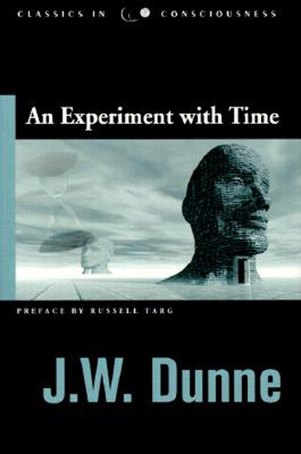

27:44 · 5 OPERE
Quid est tempus? Il tempo tra scienza e psicologia.
Il filo del discorso
La domanda di Agostino sul tempo apre un percorso fra esperienza interiore, misurazione e modelli fisici. Dr Divago distingue il tempo vissuto dagli intervalli registrati dagli orologi e usa il paradosso dei gemelli per introdurre la relatività. Il richiamo all’articolo di Einstein del 1905 conduce alla questione della simultaneità e alla descrizione degli eventi nello spazio e nel tempo.
Leggi la sintesi completaRiduci la sintesi
Un aneddoto attribuito a Einstein illustra invece la diversa percezione della durata, che va distinta dalla dilatazione relativistica. Tornano poi Agostino e le Ricerche filosofiche di Wittgenstein: l’interrogazione del linguaggio serve a rendere meno ovvio ciò che chiamiamo tempo. La macchina del tempo di Wells introduce il rapporto fra immaginazione narrativa e scienza. Seguono una discussione della fisica quantistica, il paradosso di Achille e della tartaruga e il problema delle successioni infinite. Il relatore passa quindi a esempi più speculativi: tachioni, la rappresentazione di elettroni e positroni attraverso linee nello spazio-tempo, il libro di Dunne sui sogni, le soluzioni avanzate e ritardate delle equazioni elettromagnetiche e i lavori cosmologici di Gödel. La scheda distingue questi piani: teorie matematiche, interpretazioni, ipotesi e risultati sperimentali non sono intercambiabili. Nella conclusione, il confronto fra una durata continua e una possibile descrizione discreta riporta alla domanda iniziale. Il video propone un itinerario filosofico, con alcuni passaggi scientifici che richiedono precisazioni.
I libri nel discorso

Confessioni
Note sul riferimento
Copertina: Città Nuova · 1995
Copertina autentica controllata visivamente. Edizione di riferimento; non identifica l’esemplare usato o citato nel video.
Agostino, Confessioni e la domanda sul tempo: libro XI, 14,17.

Zur Elektrodynamik bewegter Körper
Note sul riferimento
Prima pagina dell’articolo del 1905: Annalen der Physik · 1905 · prima pagina originale, p.891
Prima pagina originale dell’articolo scientifico, pagina a stampa 891, dalla scansione pubblica del Dipartimento di Fisica dell’Universidad Nacional de La Plata. Rendering PNG senza alterazioni del contenuto; non è una copertina di libro.
Einstein, 1905 e il titolo tedesco dell’articolo sono annunciati, con deformazioni nella trascrizione automatica.

Ricerche filosofiche
Note sul riferimento
Copertina: Einaudi · Piccola Biblioteca 438 · 2009 · a cura di Mario Trinchero
Immagine autentica dell’opera, controllata visivamente; l’edizione di riferimento non è attribuita al filmato.
Wittgenstein e Philosophische Untersuchungen sono nominati; titolo italiano Ricerche filosofiche.

La macchina del tempo
Note sul riferimento
Copertina: Feltrinelli · Universale Economica, I classici
H.G. Wells e La macchina del tempo sono espliciti.

An Experiment with Time
Note sul riferimento
Copertina: Hampton Roads · Classics in Consciousness, 2001 · prefazione Russell Targ
Copertina autentica dell’edizione inglese Hampton Roads del 2001. Non è la copertina della prima edizione A. & C. Black del 1927 né prova di una traduzione italiana. La tesi sulla precognizione descritta dal libro non viene presentata come risultato fisico accertato.
Dunne e il titolo reso come Un esperimento col tempo corrispondono ad An Experiment with Time, prima edizione 1927.